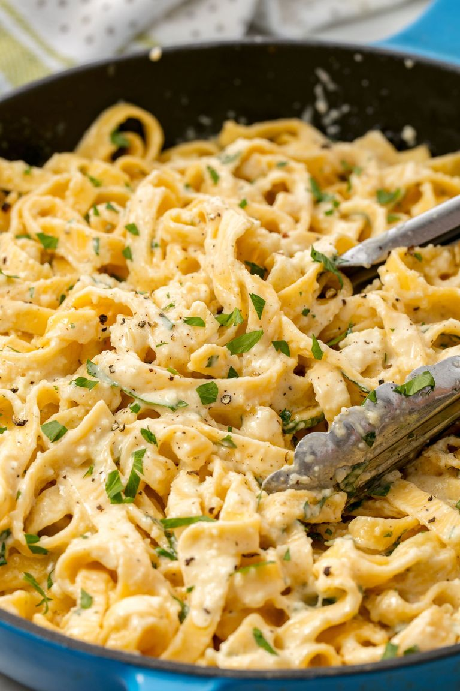

Fettucine Alfredo (35 Minutes)

Description
Fresh fettucine alfredo made from scratch. Impress your lady.
Ingredients
Fettucine
Heavy Cream
Butter
Freshly Grated Parmesan
Freshly Ground Black Pepper
Chopped Parsley
Steps
- In a large pot of boiling salted water, cook pasta according to package instructions. Reserve about 1 cup of pasta water then drain.
- Meanwhile, in a large skillet over medium heat, add cream and butter. Cook until butter is melted and the cream is bubbling. Whisk in Parmesan and season with salt and pepper. Let sauce simmer 1 to 2 minutes to thicken slightly. Sauce will still bee thin, but will thicken more as sauce cools and once pasta is added.
- Add cooked pasta and toss until coated in sauce. If the sauce is too thick, add reserved pasta water, 1 tablespoon at a time. Garnish with parsley and serve immediately.